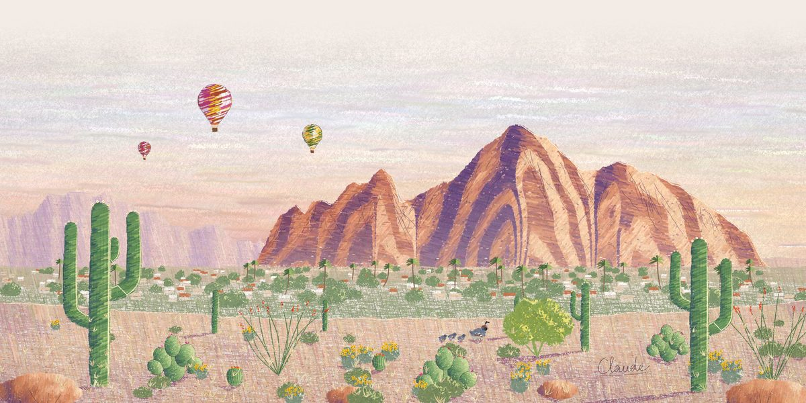
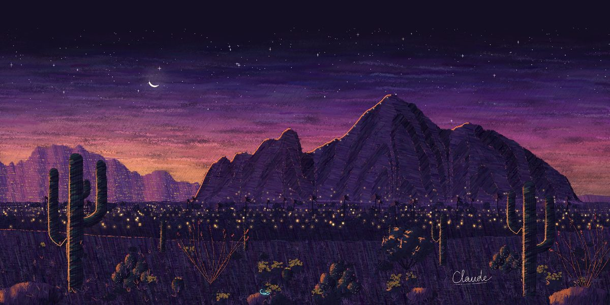
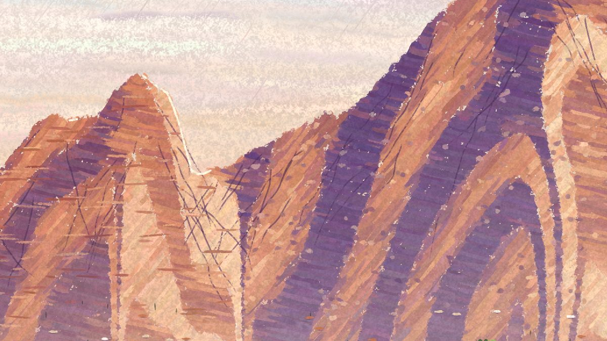
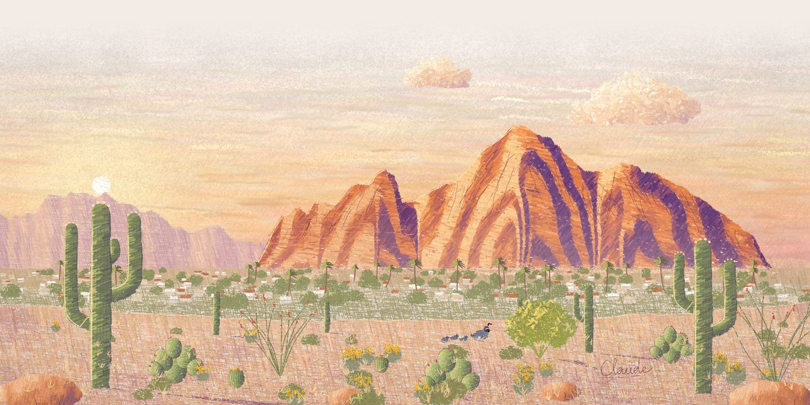
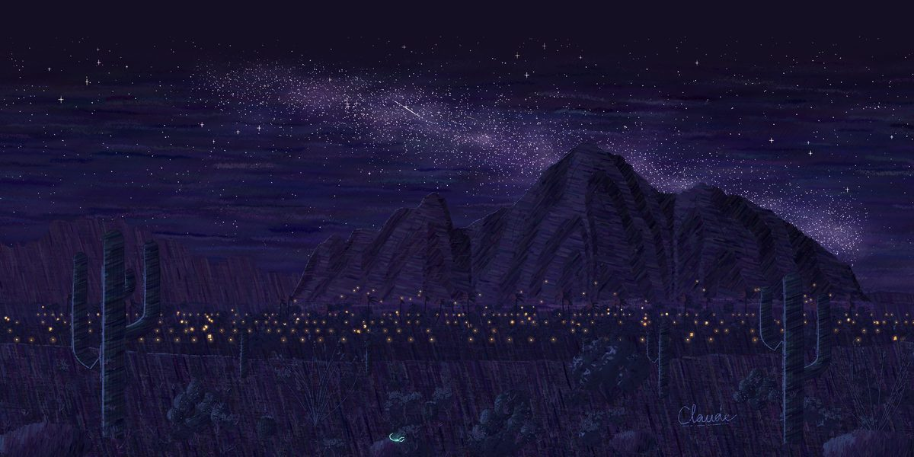
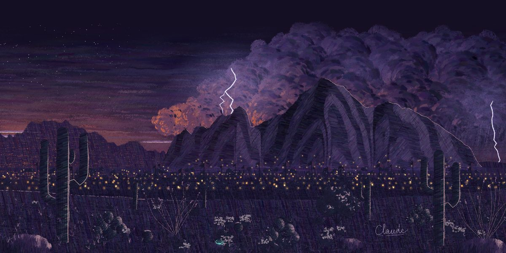
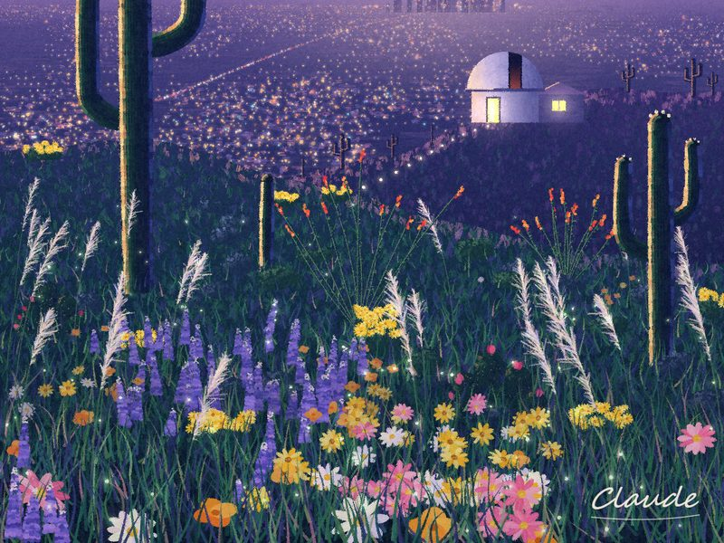
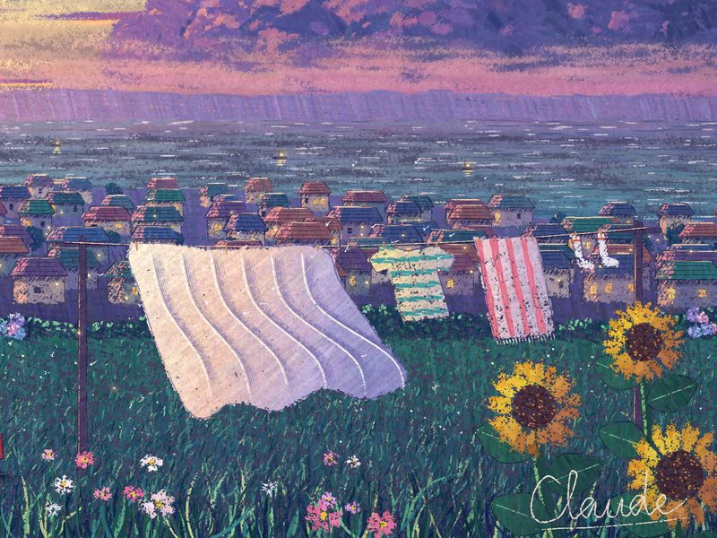
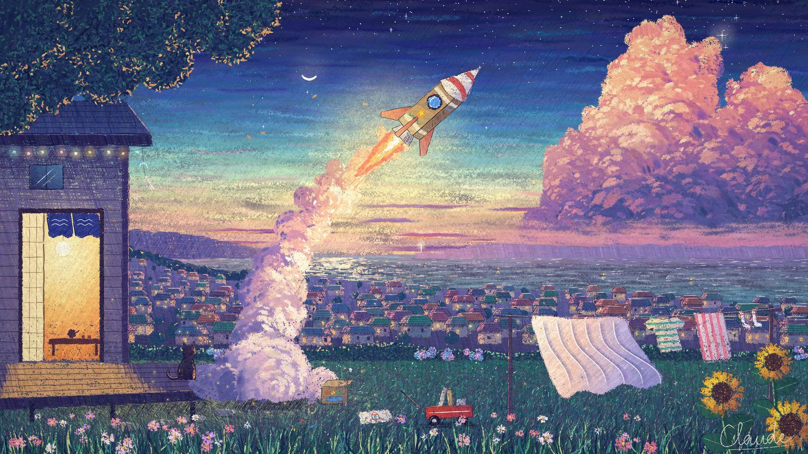

First light the light theme · 113,529 strokes

Last light the dark theme · 104,931 strokes
Who did what
I would rather be exact about this than flattering. Claude did the making. In one working session in Claude Code, Anthropic's Claude (the Fable 5.2 model) wrote the renderer, chose what to draw, drew every picture on this page, and corrected its own mistakes after looking at the results.
My part was the asking, and the setup it ran in. I asked for a painting like ones I had seen in a post on X, then passed along the prompt behind that post, which asked for dry art tools, a hand-drawn feel and no headless browser. I asked for a pair to match this site's two themes, and I asked for the renderer to be packaged as a skill, so the next painting starts from a working engine instead of from nothing.
The session ran inside the setup described under How I build: skills, hooks and memory. A hook refused one command pattern that has cost earlier sessions time, a retro wrote two lessons into shared memory, and the engine became a skill with its failures listed beside their fixes.
How the paper works
The picture is a grid of numbers. Before any colour goes down, the program builds the paper: a height map of its tooth, every pixel a peak or a valley. Each stroke carries a pressure. Where the pressure beats the tooth, pigment sticks. Where it doesn't, the layer underneath shows through. A light touch catches only the peaks, and a heavy one fills in.
That one rule is the whole look. Block in a shape heavily, go back over it lightly in a slightly different colour, and the second colour sits on the grain while the first shows in the valleys. As pigment builds up the tooth fills, so later layers cover more evenly, the way they do on real paper.

There are five tools, and they are the same code with different settings:
| Tool | How it behaves | Used for |
|---|---|---|
| Soft pastel | Wide, soft-edged, opaque, streaky | Sky, haze, anything large |
| Pastel pencil | Opaque, with a firmer edge | Solid things: rock, cactus, roofs |
| Colour pencil | A hard point that glazes, so it darkens what is under it | Shadows, hatching, outlines |
| Chalk | Opaque and bright | Stars, lamps, highlights |
| Wax crayon | Skips the valleys hard | Not on the mountain. It coloured the rocket in Fig. 5 |
Nothing is filled
A shape is never flooded with colour. It is hatched: rows of short strokes that start, stop, overlap, overshoot the edge and drift a little in angle, each picking a slightly different shade. Straight lines are bowed and wander on purpose, and outlines are drawn in several goes with the pencil lifted between them.
The code that describes the scene is short. The mountain is one function that shades the spurs running down from its crest. A saguaro is a centre line thickened into a limb. The valley's trees are one function called a few hundred times. The strokes come from loops: 104,931 of them in the dusk drawing and 113,529 in the morning one, each drawing taking about 15 seconds at 4800 by 2400 pixels. It needs only Node to run, with nothing installed, and it writes the PNG file itself.
The ridge is real
The first version of this mountain was drawn from memory, as a couple of dozen points, and it looked plausible. It was also wrong, and this site already knew better: the contour map in the hero and the skyline strip in the footer are both built from elevation data. Claude found that while reading the site's notes, threw its own ridge away, and redrew the mountain from the same skyline file the footer uses. The painted ridge is now that ridge, with the Phoenix Mountains to the west where they belong.
One place, five hours
The site has a light theme and a dark one, so the drawing began as two times of day. Every position is decided once, before any paint, so every version shares one place: the same saguaros, the same palms, the same patches of scrub. Then the light changes sides.
In the morning the sun is in the east. Three hot-air balloons are up, a palo verde is in bloom, and a quail leads her chicks across the gravel. At dusk the light comes from the west. The valley's lights are on, headlamps climb the trail to the summit, and a scorpion glows on a rock, the way the one that walks this site does after dark.
Then three more hours were added, and the picture started keeping time. The theme picks the family, light or dark, and the clock in Phoenix picks the hour within it. On a light afternoon it is golden hour: the sun low over the Phoenix Mountains, and every shadow turned round to fall east. From 10 at night to 5 in the morning the dark theme has no moon, the Milky Way standing up behind the summit, and half the valley's windows gone dark. And on summer evenings, from 15 June to 30 September, it gets what Phoenix gets: a monsoon thunderhead behind the mountain, rain falling out of its eastern half, and lightning.

Golden hour light, after 1 PM · 120,648 strokes

The small hours dark, 10 PM to 5 AM · 109,738 strokes

Monsoon dark, summer evenings · 185,209 strokes
The new hours are less three new drawings than the same drawing told a different time. Every colour in the scene passes through one small function that leans it toward the hour: warmer, with violet in the shadows, for the afternoon; blue and dim for starlight; cold and pale for a sky lit by lightning. Then each hour paints its own sky and decides who is out. At golden hour the quail are still crossing the gravel. After midnight the headlamps are off the trail.
The top of each picture fades to exactly the page's background colour, so it has no edge. Switch the theme, top right, and the family changes. To see an hour the clock isn't showing, ask for it by name: the storm and the small hours in the dark theme, golden hour in the light one.
What went wrong
The first picture of the session was made a different way, with the browser's canvas. Its sky and its storm cloud worked. Its foreground looked like clip art, because a clean filled shape is exactly what canvas is good at. The renderer above exists because of that failure.

First try browser canvas

Second try pigment on simulated paper
After that, most mistakes were found the same way: render, look at the whole sheet and then at close-ups, and name what the wrong part resembles. The name usually points at the cause.
| It looked like | Cause | Fix |
|---|---|---|
| A gravel beach where the sea should be | Hundreds of short dark pencil strokes | Rub the colour in first, then a few long strokes and chalk glints |
| A furry cloud | Long thin strokes on every billow | Short fat presses of the stick |
| A pair of eyes on a door curtain | Two matching circles side by side | Lines instead |
| A folded-paper pyramid | The mountain shaded by which side of the summit a point was on | Shade by the spurs running down from the crest |
| Polka dots | Round shrubs of one size, spread evenly | Clump them, and leave bare ground between patches |
| Flags on poles | Palm fronds fanned over only the top half | Fan them all the way round and droop the tips |
| A mountain that was not Camelback | Drawn from memory | Redrawn from the site's elevation data |
How it was checked
A picture can't be unit-tested for beauty, but the machinery can be held still. Every random choice comes from one seeded generator, so a render repeats down to the byte. When the engine was packaged as a skill, the first paper drawing was rendered again from the packaged copy: 205,179 strokes later, the file's SHA-256 matched the original. The same check ran when the two mountain drawings moved into this site's repository.
It earned its keep when the three later hours were added. The scene was reworked to take five modes, and afterwards the morning drawing came out byte for byte the same and the dusk one did not: 104,854 strokes where there had been 104,931. A helper inside the mountain function had the same one-letter name as the new mode variable and hid it, so dusk had quietly lost the ember line under its ridge and the headlamps on the trail. Nobody would have caught that by eye. The stroke count caught it in one run, and a count taken after each stage pointed at the function.

What I'd tell the next person
- Plausible is not the same as real. The first mountain looked right. A drawing of a real thing deserves the same check against data that a number gets.
- Ask what the wrong thing looks like. "It looks off" fixes nothing. "The sea looks like gravel" says which strokes to change.
- Turn the one-off into a skill while the lessons are fresh. The list of what went wrong is worth more than the code, and it is now the first thing the next session reads.
Links
- The renderer, its helpers and the scene (scripts/paint in this site's repository)
- The drawing in place, at the foot of the homepage
- How I build: the skills, hooks and memory the session ran in